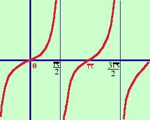

|
sviluppo y = tangx  La funzione nell'origine vale 0 E' una funzione sempre crescente nei punti multipli dispari di π/2 (cioe' ±π/2 ; ±3π/2 ; ±5π/2 ; .....) la funzione da sinistra scompare a +∞ mentre a destra ricompare da -∞
La funzione e' periodica di periodo π cioe' dopo un intervallo lungo π si ripete |